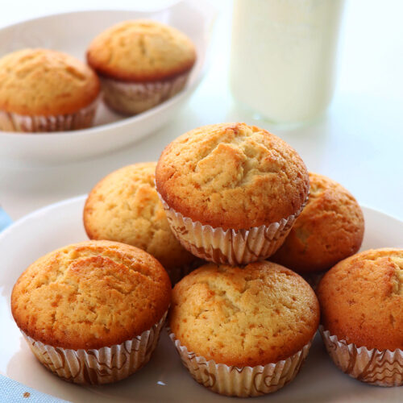

Muffins
Home page

Description
Muffins are an easy and quick to make dessert
Ingridients
- 2 cups all-purpose flour
- 3 teaspoons baking powder
- half a teaspoon of salt
- 3 quarters of a cup of white sugar
- 1 large egg
- a quarter of a cup of vegetable oil
Steps
- Gather all ingredients. Preheat the oven to 400 degrees F (200 degrees C). Grease a 12-cup muffin tin or line cups with paper liners.
- Stir flour, baking powder, salt, and sugar together in a large bowl; make a well in the center.
- Beat egg with a fork in a small bowl or 2-cup measuring cup; whisk in milk and oil.
- Pour egg mixture all at once into flour mixture; mix quickly and lightly with a fork until just moistened. The batter will be lumpy. (Fold in additional ingredients if using; see variations below).
- Spoon batter into the prepared muffin cups, filling each 3/4 full.
- Bake in the preheated oven until tops spring back when lightly pressed, about 25 minutes.